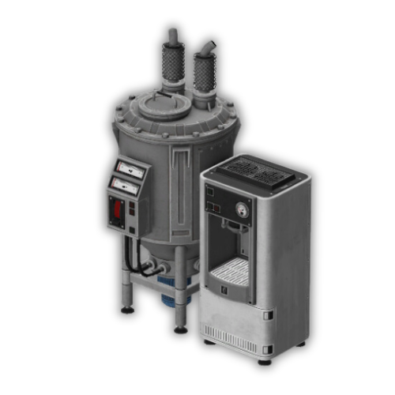

Law and order
CAD-style police workflows, armories, evidence, tickets, warrants, jails, cameras, rank controls, and field equipment.
Commercial gamemode package
A heavily expanded Helix-based roleplay gamemode built around organized crime, civic life, policing, business ownership, underground production chains, and deep character customization.
What the buyer gets
This build combines bespoke MafiaRP plugins with mature addon integrations. It covers the daily loop of a city server: character identity, factions, real estate, vehicles, policing, banking, casinos, smuggling, crafting, drugs, alcohol, tobacco, phones, radios, clothing, admin operations, and UI.
CAD-style police workflows, armories, evidence, tickets, warrants, jails, cameras, rank controls, and field equipment.
Property deeds, keys, banking, casino ownership, businesses, vendors, vehicle dealers, and persistent world entities.

Multi-step cocaine, meth, weed, psychedelics, smuggling, contraband, lockpicking, fake names, and masking systems.
Phones, radios, clothing, accessories, bodygroups, backpacks, consumables, fishing, smoking, alcohol, and atmospheric UI.
Flagship systems
These systems have the strongest feature depth, player-facing workflows, and sales-page appeal.
Complete catalog
Completion estimates compare implemented feature surfaces against visible unfinished markers, placeholder UI, debug/test commands, and missing polish.
| System | Type | Category | Completion | Signals |
|---|
Completion model
A high score means the code shows implemented server/client surfaces, entities, items, UI, networking, and few visible unfinished markers. A lower score does not always mean unusable; it usually means the system would benefit from polish, QA, cleanup, or a tighter production pass before being marketed as complete.